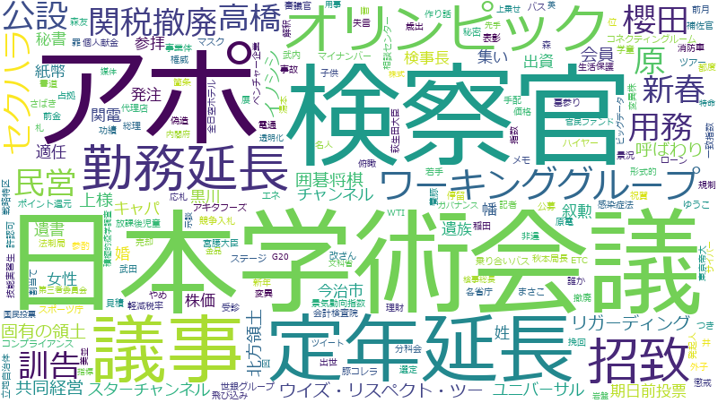

今井雅人

オリンピック、検察官、議事、日本学術会議、ワーキンググループ、定年延長、招致、原、アポ、会員、勤務延長、女性、高橋、民営、セクハラ、解釈、公設、櫻田、秘書、選定、遺族、関税撤廃、イノシシ、バス、マイナンバー、事故、出資、北方領土、子供、発注、規制、訓告、データ、位、各省庁、株価、検事長、黒川、つき、ステージ、チャンネル、マスク、ユニバーサル、価格、内閣府、分科会、固有の領土、姓、形式的、用務、総理、自治体、若手、ポイント還元、共同経営、審議官、法制局、秘密、関電、ウイズ・リスペクト・ツー、エネ、キャパ、グループ、スターチャンネル、ツアー、ローン、上様、事業体、人材、会計検査院、俯瞰、偽造、公募、公開、功績、受診、呼ばわり、囲碁将棋、図、変異、変異株、婚、技能実習生、指数、指標、撤廃、改ざん、文科省、新春、森、業者、種、競争入札、罪、適任、遺書、集い、養豚、G20、ガバナンス
日本学術会議、検察官、アポ、定年延長、議事、オリンピック、勤務延長、招致、ワーキンググループ、公設、櫻田、用務、関税撤廃、民営、原、訓告、セクハラ、高橋、新春、ウイズ・リスペクト・ツー、リガーディング、会員、上様、イノシシ、固有の領土、囲碁将棋、北方領土、呼ばわり、共同経営、スターチャンネル、姓、秘書、集い、検事長、黒川、幡、関電、遺書、遺族、チャンネル、キャパ、株価、参拝、出資、ユニバーサル、叙勲、今治市、紙幣、発注、婚、適任、女性、期日前投票、コネクティングルーム、世銀グループ、形式的、マイナンバー、解釈、法制局、書道、バス、養豚、偽造、占拠、祝賀、事業体、競争入札、つき、選定、俯瞰、ステージ、功績、ポイント還元、新年、ツアー、個人献金、井、湯本、若手、原電、変異、学童、各省庁、東京帝大、スポーツ庁、ETC、位、やめ、発起人、秘密、技能実習生、補佐官、変異株、懲戒、消防車、外子、エネ、指数、ハイヤー、分科会